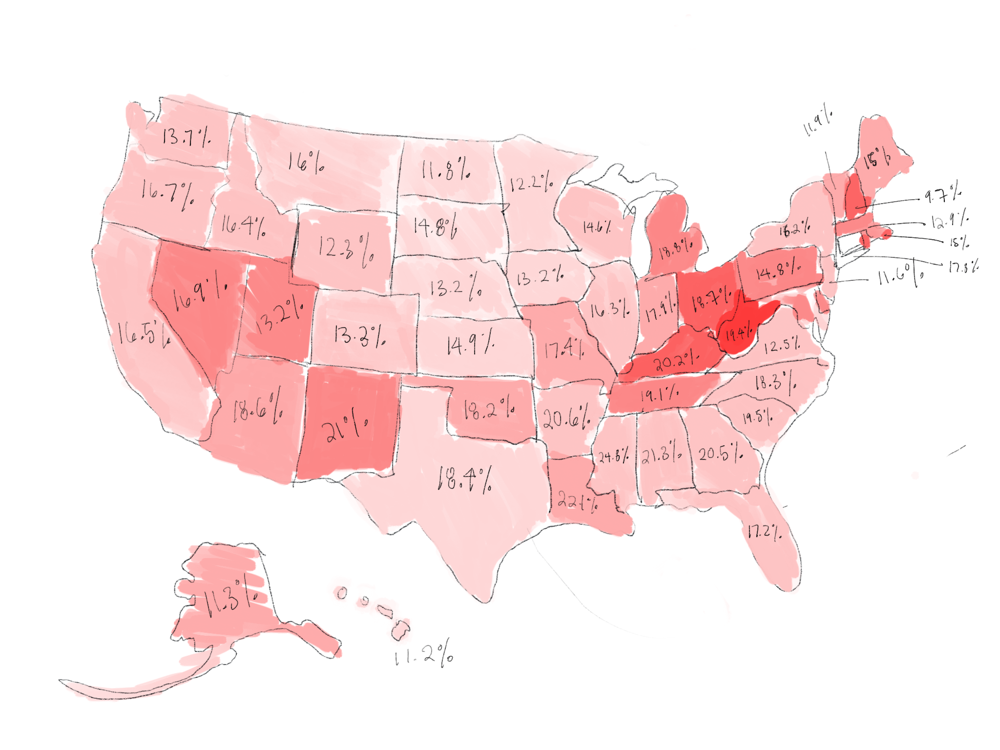
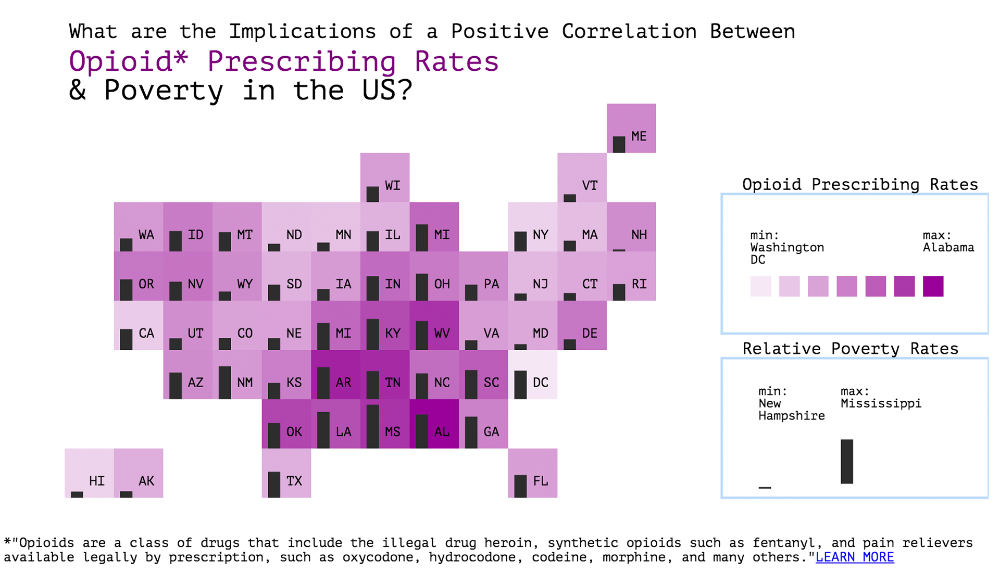

D3 Data Visualizations
Showcasing data visualization projects built in D3.js.
Role
UX/UI Designer
Deliverables
Data Visualization
Tools
D3.js
JavaScript
Photoshop
Sketch
Excel
RStudio
Opioid Prescribing Rates & Poverty
Our visualization depicts the high positive correlation between poverty rates and opioid prescribing rates in the US; states with high poverty rates are likely to also have high opioid prescribing rates. This suggests that poverty plays a role in opioid consumption. This visualization is meant to evoke curiosity and further examination of this subject matter. Why are the poor more likely to consume opioids? Does unemployment and depression play a role? What might help reduce opioid prescribing rates in states with high poverty rates?
Mockups
Initial sketch showing map, color intensity scale and percentages in text.
Mockup 1
Mockup 2
Mockup 3
Final Design
Link to project
Fast Food Chains
Research shows that Americans rarely know their caloric intake, specifically when it comes to their choice fast food burger. Without realizing, you can devour 1,500 calories of a 2,000-calorie recommended intake in one sitting at McDonald’s. These meals often come with loads of sodium, fat, and cholesterol. The goal of this visualization is to help fast food frequenters be more aware of the nutritional values of the fast foods they consume and ultimately impact their fast food consumption decisions.
Mockups

Final Design
Link to project
NYC Schools
Within NYC, there is an inequality between public high school academic performance. Often, this discrepancy is seen correlating with the percent of students attending an institution who fall below the poverty line. As students below the poverty line decrease, average SAT scores increase, and vice versa.